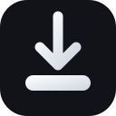

TikSave
Comprobando…
Pestaña actual
Leyendo pestaña…
Imágenes detectadas
Selecciona cuáles quieres guardar.
Imagen de alta resolución
Visor por mosaicos detectado.
Modo limpio
Queda activado al cambiar de pestaña y al abrir nuevas páginas.
Modo lectura
Usa la vista de lectura de Firefox cuando la página es un artículo.
Bloquear pop-ups siempre
Se mantiene activo en todas las pestañas hasta que tú lo desactives.
Descargando…
Preparando archivo
0%